1. Introducción
Q-Como es una aplicación móvil para Android que permite a los usuarios escanear el código de barras de productos alimenticios y consultar al instante información nutricional y medioambiental relevante: el Nutri-Score (calidad nutricional) y el Green-Score (impacto ambiental), además de datos complementarios como el grupo NOVA de procesamiento, los alérgenos, los azúcares y las grasas saturadas del producto.
Más allá de la consulta puntual de un producto, la app incorpora un sistema de favoritos para guardar los alimentos de interés, un mecanismo de gamificación mediante puntos, niveles e insignias que recompensan el uso continuado de la aplicación, y una recompensa visual —el Jardín Zen— que evoluciona a medida que el usuario progresa. Por último, Q-Como permite contribuir con nuevos datos a la comunidad de Open Food Facts, la base de datos abierta que nutre la aplicación, cerrando así el círculo entre consumir información y devolverla a la comunidad. Todo ello persigue un mismo objetivo: fomentar el consumo informado y sostenible, haciendo visible en segundos lo que hasta ahora exigía leer con lupa una etiqueta.
2. Requisitos
- Dispositivo: Android 8.0 (Oreo) o superior.
- Conexión a internet: necesaria para consultar productos y sincronizar datos con el backend.
- Cuenta de usuario: registro dentro de la propia app.
- Cámara del dispositivo: para el escaneo de códigos de barras.
3. Registro e inicio de sesión
Al abrir la aplicación sin una sesión activa, se muestra la pantalla de inicio de sesión, donde el usuario introduce su correo electrónico y contraseña para acceder a su cuenta:
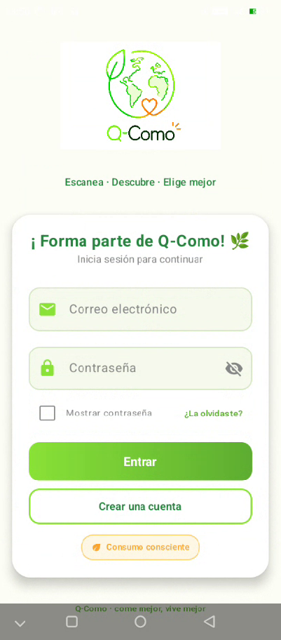
Pantalla de login — logo Q-Como, campos de correo y contraseña.
Desde el botón "Crear una cuenta" se accede al formulario de registro, donde se solicitan los datos mínimos necesarios para dar de alta al usuario en el sistema:
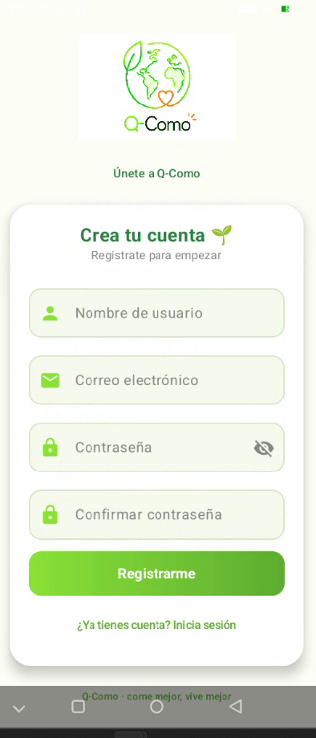
Pantalla "Crea tu cuenta" — formulario de registro.
4. Pantalla de onboarding
Tras el primer registro (o al iniciar sesión por primera vez), la aplicación muestra una breve introducción de tres pantallas deslizables que explican, de forma visual y resumida, en qué consiste el eco-score, qué es la comunidad de Open Food Facts y por qué Q-Como apuesta por el consumo consciente. Su objetivo es familiarizar al usuario con la filosofía de la app antes de empezar a escanear productos:
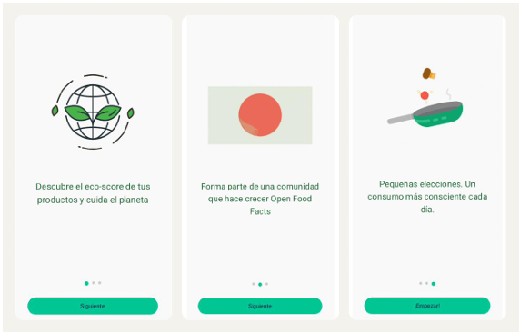
Onboarding — 3 pantallas: eco-score / comunidad Open Food Facts / consumo consciente.
5. Pantalla principal (Home)
Es la pantalla a la que llega el usuario tras iniciar sesión y el punto de partida de toda la navegación de la app. Desde aquí se accede directamente a la función de escaneo, y a través del icono de tres puntos (⋮) se despliega el menú de opciones con el resto de secciones: Mi cuenta, Quiénes somos, Jardín Zen, Recompensas por niveles e Info de logros.
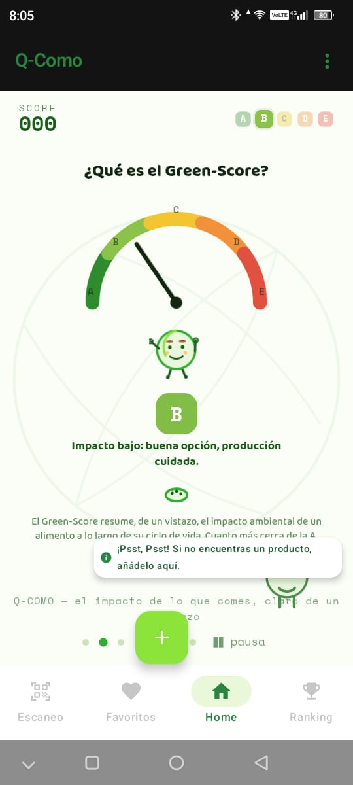
Pantalla "Home" — acceso al escaneo y al menú de opciones.
6. Escaneo de un producto
Desde la pantalla principal, el usuario accede a la función de escaneo de código de barras. La cámara se activa con una guía visual que facilita el encuadre; en cuanto el código es reconocido, la app consulta automáticamente la información del producto en Open Food Facts:
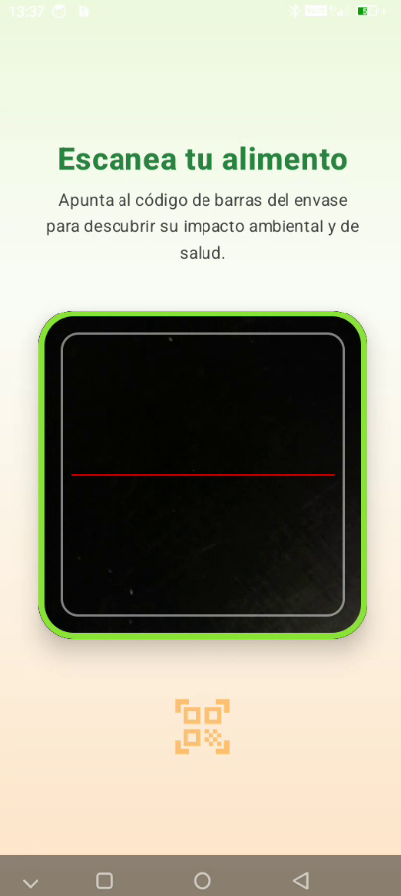
Pantalla "Escanea tu alimento" — visor de cámara con guía de escaneo.
7. Pantalla de detalle del producto
Tras escanear (o seleccionar) un producto, se muestra su ficha detallada: nombre y foto del producto, Nutri-Score, Green-Score, grupo NOVA de procesamiento, ingredientes, alérgenos, azúcares y grasas saturadas. Es la pantalla central de la app, donde toda la información recogida de Open Food Facts se presenta de forma clara y jerarquizada:
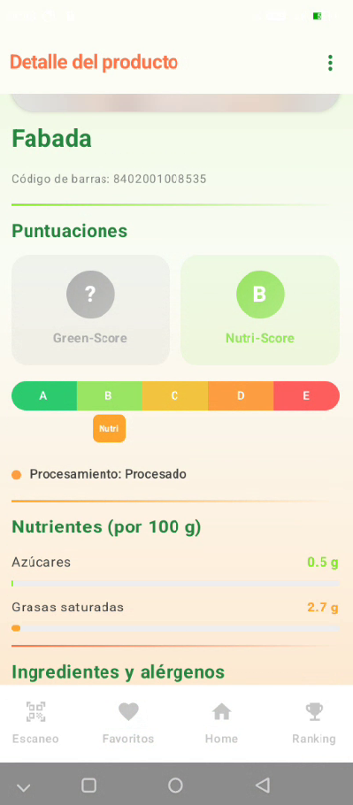
Pantalla "Detalle del producto" — puntuaciones, nutrientes, ingredientes y alérgenos.
8. Añadir a favoritos
Pulsando el icono de tres puntos (⋮) en la ficha de detalle, se despliega un menú con dos opciones: aportar información sobre el producto o incluirlo en la lista de favoritos, para poder consultarlo rápidamente más adelante sin necesidad de volver a escanearlo:
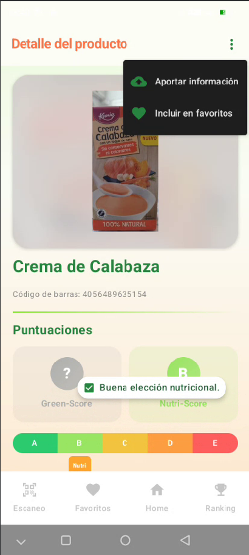
Menú desplegable sobre "Detalle del producto" — Aportar información / Incluir en favoritos.
9. Sistema de puntos y gamificación
Los usuarios acumulan puntos mediante el uso de la aplicación —escanear productos, añadir favoritos o contribuir con nuevos datos a Open Food Facts—. Esos puntos determinan el nivel del usuario, asociado a una insignia visual que se muestra en su perfil y en el ranking de la comunidad:
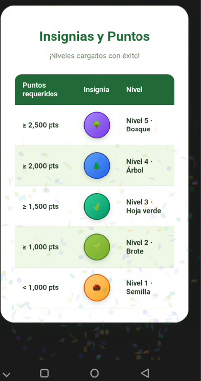
Tabla "Insignias y Puntos".
10. El Jardín Zen
Es la recompensa visual del progreso del usuario: un jardín personal que se va enriqueciendo con nuevos elementos —árboles, piedras zen, incienso, fuente— a medida que se sube de nivel. Cada elemento se anima mediante una animación Lottie que se despliega progresivamente conforme se desbloquean nuevos logros, convirtiendo el avance dentro de la app en algo tangible y agradable de visitar:

Jardín Zen — escena con árboles, piedras y farolillo.
11. Ranking / colaboración con la comunidad
Muestra una clasificación de usuarios según los puntos acumulados, fomentando la participación y la comparación entre la comunidad de Q-Como:
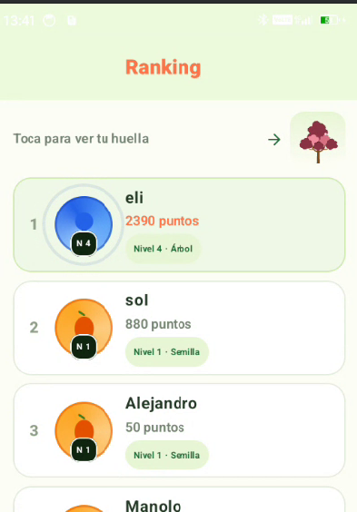
Pantalla "Ranking" — listado de usuarios con puntos y nivel.
12. Contribución a Open Food Facts
Desde la pantalla de detalle, mediante la opción "Aportar información", se accede al formulario de contribución de datos. Los datos introducidos por el usuario se envían directamente a Open Food Facts, ampliando y mejorando la base de datos abierta de la que se nutre la propia app:
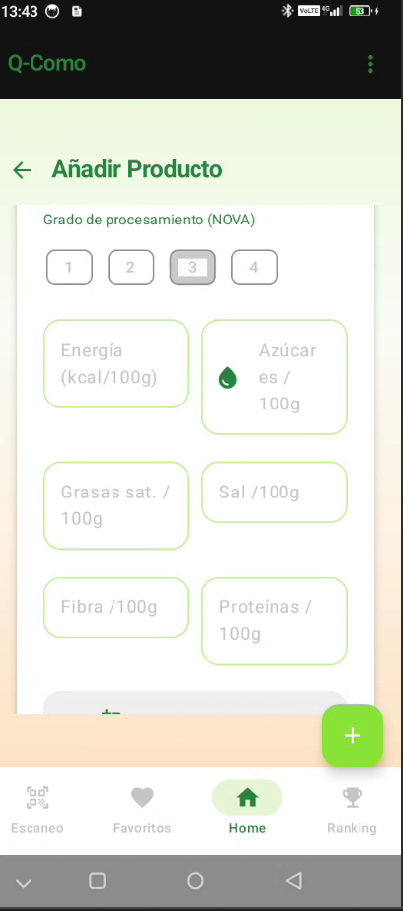
Pantalla "Añadir Producto".
13. Quiénes somos
Sección informativa sobre el propósito de la aplicación (Trabajo de Fin de Grado de DAM) y sobre Open Food Facts, la base de datos colaborativa en la que se apoya Q-Como para obtener y ampliar la información de los productos.
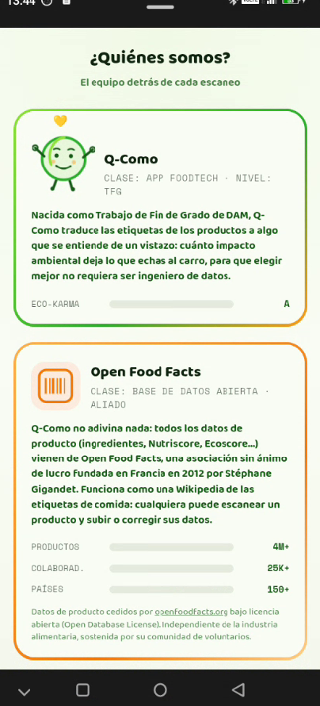
Pantalla "¿Quiénes somos?" — el equipo detrás de cada escaneo.
Desde esta pantalla, la app redirige a la página oficial de Open Food Facts. Este enlace no es solo informativo: es un requisito derivado de la licencia bajo la que se distribuyen los datos, la Open Database License (ODBL), que exige reconocer y enlazar a la fuente original cada vez que se reutilizan sus datos.
| Aspecto | Descripción |
|---|---|
| Fuente de datos | Open Food Facts, base de datos colaborativa y abierta de productos alimenticios de todo el mundo. |
| Licencia | Open Database License (ODBL). |
| Condición principal | Atribución obligatoria: citar a Open Food Facts como fuente y enlazar a su web y a la licencia. |
| Enlace desde Q-Como | La sección "Quiénes somos" incluye un enlace directo a openfoodfacts.org. |
| Contrapartida | Los datos que el usuario aporta desde Q-Como (sección 12) se reintegran en Open Food Facts, devolviendo valor a la comunidad de la que procede la información. |
15. Mi cuenta
Pantalla de gestión de los datos de la cuenta del usuario, donde se muestra el correo electrónico asociado y se ofrece la opción de cerrar sesión:
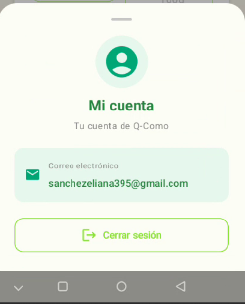
Pantalla "Mi cuenta" — correo electrónico y botón de cerrar sesión.